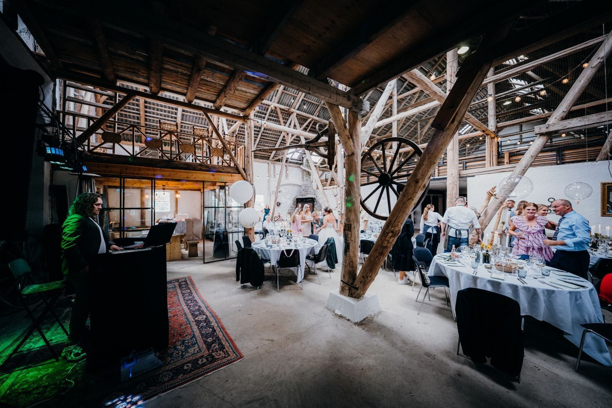

Springfield's first non-volunteer fire station, 1902 to 1985, restored as an event venue.
Historic Firehouse No.2 is Springfield's first non-volunteer fire station, 1902 to 1985, restored as an event venue. The venue has a 4,000 square foot Main Hall seating up to 250, a 6,000 square foot garden courtyard with brick patio, fire pit, and the Perchance to Dream sculpture, a bridal party area and grooms' room upstairs, a catering area, gallery, gift closet, DIY photobooth, buffet bar, and saloon. Green Team recycling is included in every event. The venue hosts ceremonies, receptions, and rehearsal dinners, with an open house on the 1st and 3rd Wednesdays from 4 PM to 6 PM.
Call to ask: +1 417-839-0119
Services
| Main Hall, 4,000 sq ft, seats up to 250 | A 4,000 square foot Main Hall seating up to 250. |
| Garden courtyard, 6,000 sq ft | A 6,000 square foot garden courtyard with brick patio, fire pit, and the Perchance to Dream sculpture. |
| Bridal party area and grooms' room upstairs | A bridal party area and grooms' room upstairs. |
| Catering area, gallery, gift closet | A catering area, gallery, and gift closet. |
| DIY photobooth, buffet bar, saloon | A DIY photobooth, buffet bar, and saloon. |
| Green Team recycling included in every event | Green Team recycling included in every event. |
| Ceremonies, receptions, rehearsal dinners | Ceremonies, receptions, and rehearsal dinners. |
| Open house 1st and 3rd Wednesdays 4 PM to 6 PM | An open house on the 1st and 3rd Wednesdays from 4 PM to 6 PM. |
Photos


All photos on this page are stock photos, not photos of this business.